Candidate List 20260227 Previous Day Next Day Section 1: New Sources (age<1d) Cosmological Afterglow
Section 2: Old (1-5d) sources observed last night placeholder
Section 1: New Afterglow/FBOT Cands Last Night (1)
1. ZTF26aaimcbx (Afterglow?) [Back to Top] [Share] [Trigger Swift] [Fritz ] [Lasair ]RA, Dec: 39.70119, 6.37062 2h38m48.28s, 6d22m14.23sGalactic (l, b): 164.6635, -47.61222 ext(g-r) = 0.082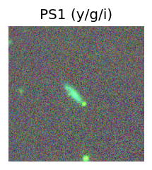 peak abs mag = -18.17 LegacySurvey: 1 sources in 3 arcsec Closest: d = 1.28 arcsec, 121.4 deg (east of north) photoz=0.13 (68% bounds 0.07, 0.23), type=SER peak abs mag = -18.98 (68% bounds -17.61, -20.35) Consistent with synchrotron, g-r>0!
Section 2: Older Sources Observed Last Night (20)
0. ZTF26aahboup (Afterglow?FBOT?) [Back to Top] [Share] [Trigger Swift] [Fritz ] [Lasair ]RA, Dec: 133.84832, 39.42391 8h55m23.60s, 39d25m26.08sGalactic (l, b): 182.83427, 40.05641 ext(g-r) = 0.025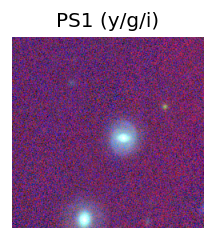 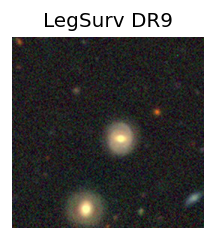 LegacySurvey: 1 sources in 3 arcsec Closest: d = 2.24 arcsec, 260.8 deg (east of north) photoz=0.15 (68% bounds 0.04, 0.4), type=EXP peak abs mag = -19.89 (68% bounds -16.85, -22.29) Consistent with synchrotron, g-r>0!
1. ZTF26aahfrag (Afterglow?) [Back to Top] [Share] [Trigger Swift] [Fritz ] [Lasair ]RA, Dec: 138.9809, 10.13588 9h15m55.42s, 10d 8m9.15sGalactic (l, b): 220.66543, 36.6342 ext(g-r) = 0.06LegacySurvey: 1 sources in 3 arcsec Closest: d = 7.88 arcsec, 12.2 deg (east of north) photoz=0.69 (68% bounds 0.19, 1.32), type=PSF peak abs mag = -24.9 (68% bounds -21.64, -26.63) Consistent with synchrotron, g-r>0!
2. ZTF26aahfvci (FBOT?) [Back to Top] [Share] [Trigger Swift] [Fritz ] [Lasair ]RA, Dec: 153.59857, 40.72348 10h14m23.66s, 40d43m24.55sGalactic (l, b): 179.79774, 55.05766 ext(g-r) = 0.019peak abs mag = -19.53 LegacySurvey: 1 sources in 3 arcsec Closest: d = 3.33 arcsec, 33.7 deg (east of north) photoz=0.07 (68% bounds 0.05, 0.08), type=SER peak abs mag = -18.75 (68% bounds -17.95, -19.26)
3. ZTF26aahgbbn (Afterglow?FBOT?) [Back to Top] [Share] [Trigger Swift] [Fritz ] [Lasair ]RA, Dec: 151.32246, 22.39842 10h 5m17.39s, 22d23m54.31sGalactic (l, b): 210.73127, 52.15486 ext(g-r) = 0.044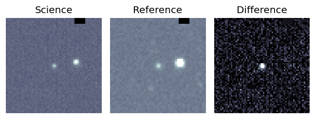peak abs mag = -21.55 LegacySurvey: 1 sources in 3 arcsec Closest: d = 0.14 arcsec, 187.7 deg (east of north) photoz=0.23 (68% bounds 0.14, 0.29), type=REX peak abs mag = -22.15 (68% bounds -20.98, -22.75)
4. ZTF26aahghbt (FBOT?) [Back to Top] [Share] [Trigger Swift] [Fritz ] [Lasair ]RA, Dec: 126.50531, -13.05671 8h26m1.27s, -13d-3m-24.15sGalactic (l, b): 235.95566, 14.16504 ext(g-r) = 0.057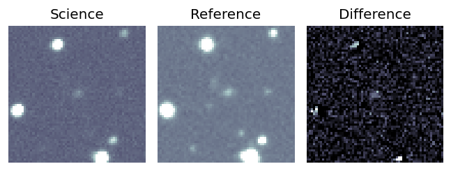PS1: 1 source in 3 arcsec Closest: d = 1.60 arcsec photoz=0.13+/-0.03 peak abs mag = -20.03 Consistent with synchrotron, g-r>0!
5. ZTF26aahgjws (FBOT?) [Back to Top] [Share] [Trigger Swift] [Fritz ] [Lasair ]RA, Dec: 125.39845, -6.00956 8h21m35.63s, -6d 0m-34.41sGalactic (l, b): 229.1399, 16.94953 ext(g-r) = 0.052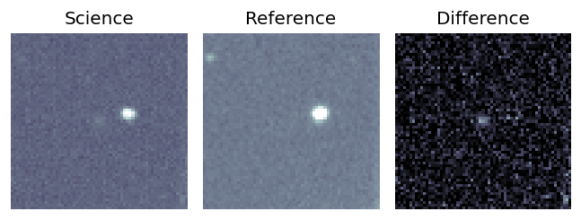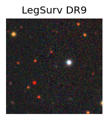 LegacySurvey: 1 sources in 3 arcsec Closest: d = 1.45 arcsec, 255.0 deg (east of north) photoz=0.5 (68% bounds 0.3, 0.9), type=REX peak abs mag = -23.15 (68% bounds -21.84, -24.68) Consistent with synchrotron, g-r>0!
6. ZTF26aahixfn (FBOT?) [Back to Top] [Share] [Trigger Swift] [Fritz ] [Lasair ]RA, Dec: 172.7169, 20.28023 11h30m52.06s, 20d16m48.84sGalactic (l, b): 229.00642, 70.35733 ext(g-r) = 0.023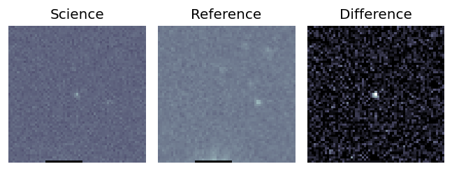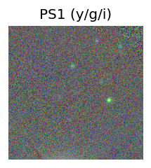 LegacySurvey: 1 sources in 3 arcsec Closest: d = 0.19 arcsec, 226.9 deg (east of north) photoz=0.76 (68% bounds 0.48, 1.05), type=REX peak abs mag = -24.33 (68% bounds -23.1, -25.16)
7. ZTF26aahjfoj (Afterglow?FBOT?) [Back to Top] [Share] [Trigger Swift] [Fritz ] [Lasair ]RA, Dec: 174.171, 31.2375 11h36m41.04s, 31d14m15.01sGalactic (l, b): 194.32928, 73.19759 ext(g-r) = 0.024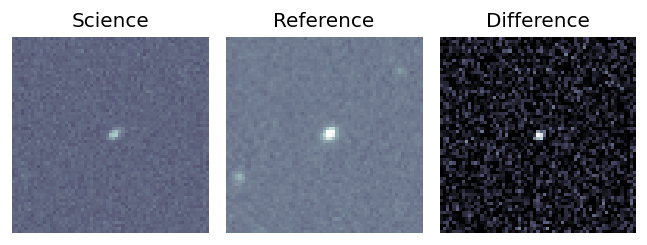peak abs mag = -19.63 LegacySurvey: 1 sources in 3 arcsec Closest: d = 1.65 arcsec, 292.6 deg (east of north) photoz=0.1 (68% bounds 0.07, 0.13), type=SER peak abs mag = -18.78 (68% bounds -18.04, -19.32) Consistent with synchrotron, g-r>0!
8. ZTF26aahjpbx (FBOT?) [Back to Top] [Share] [Trigger Swift] [Fritz ] [Lasair ]RA, Dec: 187.70773, 8.27395 12h30m49.86s, 8d16m26.23sGalactic (l, b): 287.47436, 70.52476 ext(g-r) = 0.023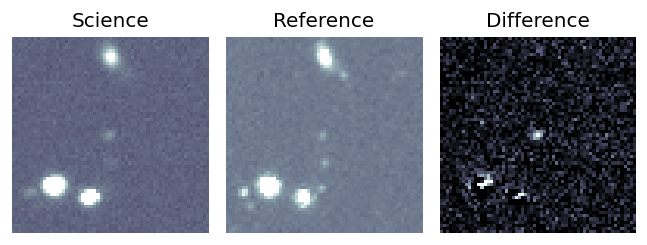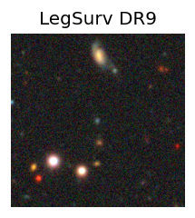 peak abs mag = -20.77 LegacySurvey: 1 sources in 3 arcsec Closest: d = 0.41 arcsec, 151.4 deg (east of north) photoz=0.27 (68% bounds 0.2, 0.39), type=REX peak abs mag = -20.51 (68% bounds -19.74, -21.36)
9. ZTF26aahpkqy (FBOT?) [Back to Top] [Share] [Trigger Swift] [Fritz ] [Lasair ]RA, Dec: 169.76846, 0.87315 11h19m4.43s, 0d52m23.35sGalactic (l, b): 258.91502, 55.64312 WARNING: -3.25 deg from ecliptic plane ext(g-r) = 0.034peak abs mag = -19.06 LegacySurvey: 1 sources in 3 arcsec Closest: d = 1.37 arcsec, 230.4 deg (east of north) photoz=0.12 (68% bounds 0.1, 0.15), type=REX peak abs mag = -19.72 (68% bounds -19.17, -20.24) Consistent with synchrotron, g-r>0!
10. ZTF26aahpovy (Afterglow?) [Back to Top] [Share] [Trigger Swift] [Fritz ] [Lasair ]RA, Dec: 106.79155, -1.96131 7h 7m9.97s, -1d-57m-40.71sGalactic (l, b): 216.47353, 2.60144 ext(g-r) = 0.44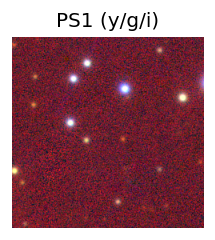
11. ZTF26aahshcp (Afterglow?) [Back to Top] [Share] [Trigger Swift] [Fritz ] [Lasair ]RA, Dec: 146.51992, 19.75058 9h46m4.78s, 19d45m2.10sGalactic (l, b): 212.55613, 47.08597 ext(g-r) = 0.025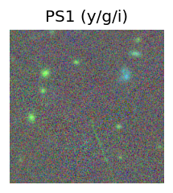 LegacySurvey: 1 sources in 3 arcsec Closest: d = 7.66 arcsec, 282.2 deg (east of north) photoz=1.03 (68% bounds 0.9, 1.17), type=REX peak abs mag = -24.92 (68% bounds -24.56, -25.27)
12. ZTF26aahyyny (Afterglow?FBOT?) [Back to Top] [Share] [Trigger Swift] [Fritz ] [Lasair ]RA, Dec: 120.84859, 8.29048 8h 3m23.66s, 8d17m25.73sGalactic (l, b): 213.60298, 19.73908 ext(g-r) = 0.019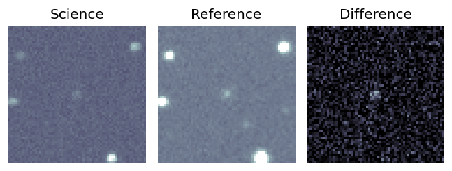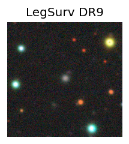 peak abs mag = -20.04 LegacySurvey: 1 sources in 3 arcsec Closest: d = 0.69 arcsec, 328.1 deg (east of north) photoz=0.19 (68% bounds 0.15, 0.23), type=REX peak abs mag = -20.96 (68% bounds -20.35, -21.41) Consistent with synchrotron, g-r>0!
13. ZTF26aaibaza (Afterglow?) [Back to Top] [Share] [Trigger Swift] [Fritz ] [Lasair ]RA, Dec: 167.19962, -6.76905 11h 8m47.91s, -6d-46m-8.58sGalactic (l, b): 262.96414, 47.97735 ext(g-r) = 0.045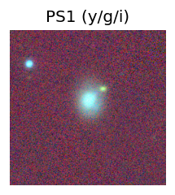 LegacySurvey: 1 sources in 3 arcsec Closest: d = 2.46 arcsec, 351.8 deg (east of north) photoz=0.04 (68% bounds 0.03, 0.04), type=SER peak abs mag = -17.52 (68% bounds -17.15, -17.98) Consistent with synchrotron, g-r>0!
14. ZTF26aaiibkk (FBOT?) [Back to Top] [Share] [Trigger Swift] [Fritz ] [Lasair ]RA, Dec: 166.97379, 19.04025 11h 7m53.71s, 19d 2m24.91sGalactic (l, b): 226.21751, 64.91006 ext(g-r) = 0.026peak abs mag = -19.92 LegacySurvey: 1 sources in 3 arcsec Closest: d = 2.71 arcsec, 143.7 deg (east of north) photoz=0.13 (68% bounds 0.11, 0.16), type=SER peak abs mag = -19.89 (68% bounds -19.49, -20.32)
15. ZTF26aaiicho (Afterglow?FBOT?) [Back to Top] [Share] [Trigger Swift] [Fritz ] [Lasair ]RA, Dec: 172.11599, 14.2327 11h28m27.84s, 14d13m57.70sGalactic (l, b): 242.46803, 66.75945 ext(g-r) = 0.036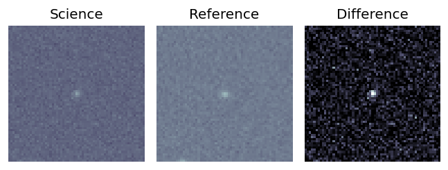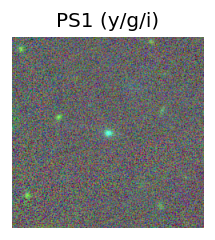 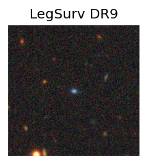 peak abs mag = -20.82 LegacySurvey: 1 sources in 3 arcsec Closest: d = 0.56 arcsec, 199.2 deg (east of north) photoz=0.09 (68% bounds 0.06, 0.18), type=SER peak abs mag = -18.49 (68% bounds -17.56, -20.05)
16. ZTF26aaijdek (Afterglow?) [Back to Top] [Share] [Trigger Swift] [Fritz ] [Lasair ]RA, Dec: 128.33008, 29.84695 8h33m19.22s, 29d50m49.02sGalactic (l, b): 193.72147, 33.98022 ext(g-r) = 0.043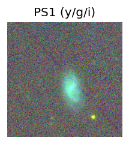 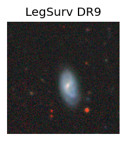 LegacySurvey: 1 sources in 3 arcsec Closest: d = 4.60 arcsec, 275.7 deg (east of north) photoz=0.15 (68% bounds 0.1, 0.32), type=EXP peak abs mag = -19.81 (68% bounds -18.98, -21.72) Consistent with synchrotron, g-r>0!
17. ZTF26aaikqwp (Afterglow?) [Back to Top] [Share] [Trigger Swift] [Fritz ] [Lasair ]RA, Dec: 161.19451, 58.45799 10h44m46.68s, 58d27m28.75sGalactic (l, b): 149.23878, 51.7096 ext(g-r) = 0.012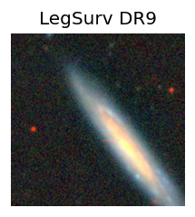 LegacySurvey: 1 sources in 3 arcsec Closest: d = 5.47 arcsec, 300.9 deg (east of north) photoz=0.02 (68% bounds 0.01, 0.04), type=PSF peak abs mag = -15.76 (68% bounds -14.31, -16.84) Consistent with synchrotron, g-r>0!
18. ZTF26aaimcbc (Afterglow?) [Back to Top] [Share] [Trigger Swift] [Fritz ] [Lasair ]RA, Dec: 40.04967, 7.53192 2h40m11.92s, 7d31m54.91sGalactic (l, b): 164.06109, -46.47215 ext(g-r) = 0.097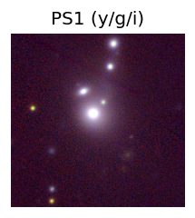 LegacySurvey: 1 sources in 3 arcsec Closest: d = 2.80 arcsec, 39.2 deg (east of north) photoz=0.07 (68% bounds 0.06, 0.08), type=SER peak abs mag = -18.78 (68% bounds -18.36, -18.97)
19. ZTF26aainuct (Afterglow?) [Back to Top] [Share] [Trigger Swift] [Fritz ] [Lasair ]RA, Dec: 138.94643, -5.05823 9h15m47.14s, -5d-3m-29.63sGalactic (l, b): 236.19138, 28.81409 ext(g-r) = 0.035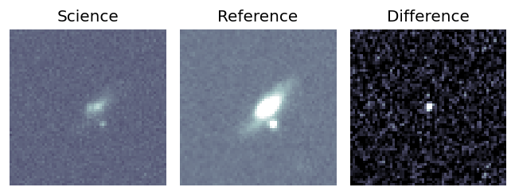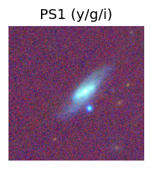 LegacySurvey: 1 sources in 3 arcsec Closest: d = 3.64 arcsec, 271.9 deg (east of north) photoz=0.09 (68% bounds 0.08, 0.1), type=SER peak abs mag = -18.8 (68% bounds -18.41, -19.04) Consistent with synchrotron, g-r>0! 
 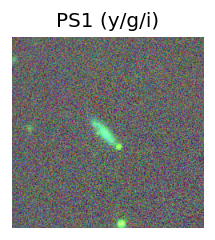
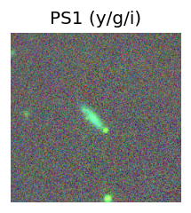 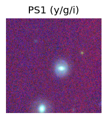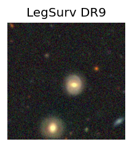
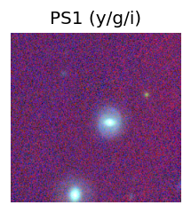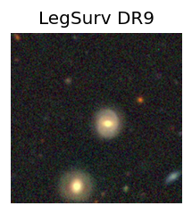


 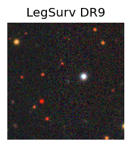
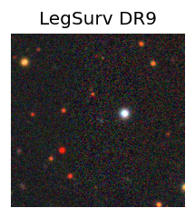


 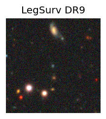
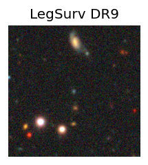


 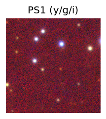
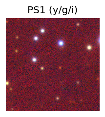
 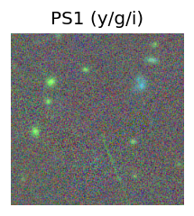
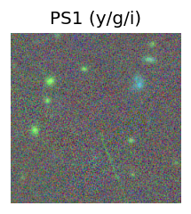
 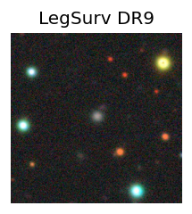
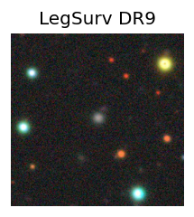 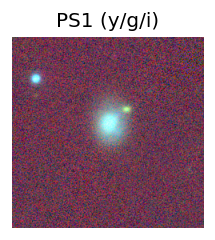
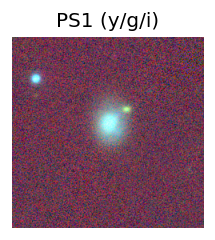


 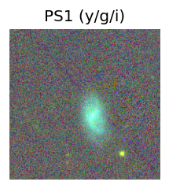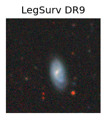
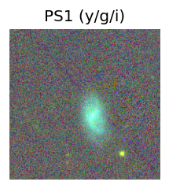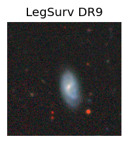
 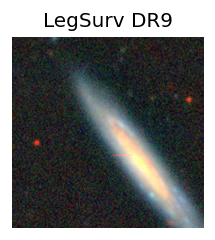
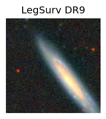 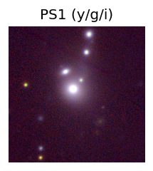
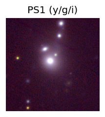